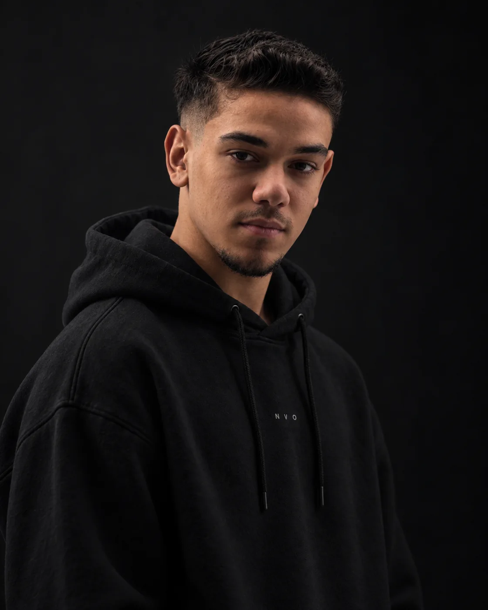
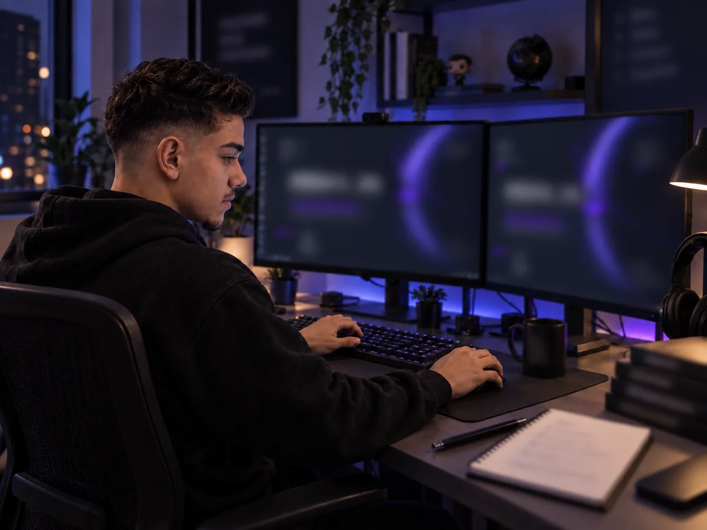

[ 01 ]
Desenvolvimento
Desenvolvimento de sites e sistemas a partir das necessidades do seu projeto.
Conversar sobre seu projetoHECTOR FELIP / DEV & DESIGNER
Desenvolvimento e web design para dar forma à sua próxima ideia.

01 / SOBRE
Sou Hector Felip. No FELPOLIIN, reúno desenvolvimento e web design para dar forma a projetos digitais.
Tem uma ideia em mente? Vamos conversar sobre o que você quer construir.
Vamos conversar
02 / O QUE FAÇO
Desenvolvimento de sites e sistemas a partir das necessidades do seu projeto.
Conversar sobre seu projetoWeb design que conecta estrutura, composição e identidade visual.
Conversar sobre seu projeto03 / TRABALHO EM DESTAQUE

Site para a Milão Pizzaria, com página inicial e cardápio digital. Um projeto de presença online para o negócio.
04 / ÁREAS DE ATUAÇÃO
Desenvolvimento e web design se encontram na construção de um projeto digital.